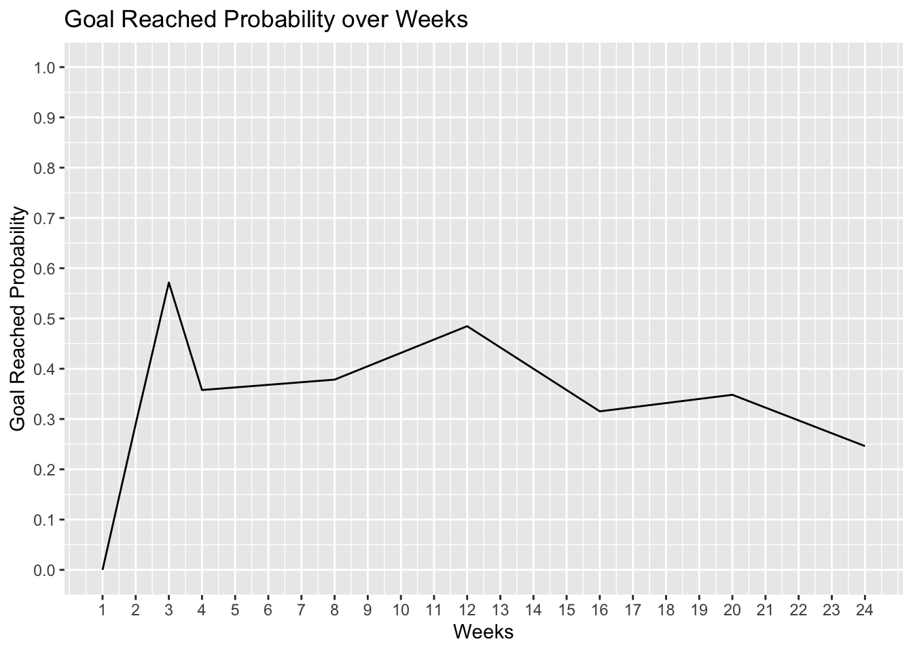

Loading required package: NLP
Attaching package: 'NLP'
The following object is masked from 'package:ggplot2':
annotate
library(SnowballC)library(wordcloud)
Loading required package: RColorBrewer
library(RColorBrewer)library(syuzhet)
gfm_data <-read.csv("data/gfm_cleaned_data.csv")
Data Analysis
Time analysis:
How does the length of the fundraising campaign impact its success? Are longer or shorter campaigns more effective in reaching their funding goals?
#Creating time analysis dataset time_analysis <-select(gfm_data, category, position, amount_raised, goal, number_of_donators, campaign_length_days)#was the goal reached or not? time_analysis$goal_reached <-ifelse(time_analysis$amount_raised >=time_analysis$goal, "Yes", "No")#clean dataset time_analysis <- time_analysis[complete.cases(time_analysis$campaign_length_days, time_analysis$goal_reached), ]#graph analysistime_analysis$goal_reached <-factor(time_analysis$goal_reached, levels =c("No", "Yes"))# Create a boxplot to compare campaign lengths for goal reached and not reached campaignsggplot(time_analysis, aes(x = goal_reached, y = campaign_length_days, fill = goal_reached)) +geom_boxplot() +labs(x ="Goal Reached", y ="Campaign Length (Days)",title ="Impact of Campaign Length on Goal Achievement") +theme_minimal()
Both Yes and No Goal reached have very similar
time_analysis$goal_reached <-factor(time_analysis$goal_reached, levels =c("No", "Yes"))# Aggregate counts for each unique combination of "campaign_length_days" and "goal_reached"aggregated_data <-aggregate(goal_reached ~ campaign_length_days, data = time_analysis, FUN = table)# Rename the columnscolnames(aggregated_data) <-c("Campaign_Length_Days", "Counts")# Split "Counts" column into separate columns for "No" and "Yes"aggregated_data <-cbind(aggregated_data, as.data.frame(aggregated_data$Counts))# Remove the original "Counts" columnaggregated_data <-subset(aggregated_data, select =-Counts)# Rename the columns for "No" and "Yes"colnames(aggregated_data)[2:3] <-c("No_Count", "Yes_Count")aggregated_data$yes_probability <- aggregated_data$Yes_Count / (aggregated_data$No_Count + aggregated_data$Yes_Count)# Print the new dataframeprint(aggregated_data)
# Assuming "aggregated_data" is your dataframe# Define the ranges for each group of campaign lengthsbreaks <-c(0, 7, 14, 21, 30, 60, 90, 120, 150, 180)# Create a new column for the groupsaggregated_data$weeks <-cut(aggregated_data$Campaign_Length_Days, breaks = breaks, labels =FALSE)# Aggregate data based on the groupsaggregated_month_data <-aggregate(cbind(No_Count, Yes_Count) ~ weeks, data = aggregated_data, FUN = sum)aggregated_month_data[5, 1] <-8aggregated_month_data[6, 1] <-12aggregated_month_data[7, 1] <-16aggregated_month_data[8, 1] <-20aggregated_month_data[9, 1] <-24print(aggregated_month_data)
aggregated_month_data$yes_probability <- aggregated_month_data$Yes_Count / (aggregated_month_data$No_Count + aggregated_month_data$Yes_Count)# Create a line plotggplot(aggregated_month_data, aes(x = weeks, y = yes_probability)) +geom_line() +scale_x_continuous(breaks =seq(min(aggregated_month_data$weeks), max(aggregated_month_data$weeks), by =1)) +scale_y_continuous(breaks =seq(0, 1, by =0.1), limits =c(0, 1)) +labs(x ="Weeks", y ="Goal Reached Probability",title ="Goal Reached Probability over Weeks")

Text Analysis
Can the language used in the title and text of the campaign (such as sentiment, keywords, urgency) be linked to its success? Are there common themes or words in the most successful campaigns?
text_analysis <- gfm_data |>select(title, text)
Can sentiment analysis of campaign descriptions provide insights into campaign success on GoFundMe? How do positive or negative sentiments affect donor engagement and fundraising outcomes?”